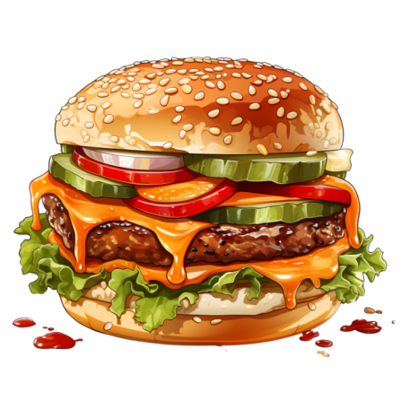

A Brief History of the Fast Food Industry

History of Fast Food
While the concept of eating outside of the home has been around for centuries, the fast food industry as we know it did not get its start until the post-WWII American economic boom. Americans began to spend more and buy more as the economy boomed and a culture of consumerism bloomed. As a result of this new desire to have it all, coupled with the strides made by women while the men were away, both members of the household began to work outside the home. Eating out, which had previously been considered a luxury, became a common occurrence and then a necessity. Workers, and working families, needed quick service and inexpensive food for both lunch and dinner. This need is what drove the phenomenal success of the early fast food giants, which catered to the family on the go.
Different Kind of Fast Foods
-
Delicious Fast Food

-
Hamburger
 -
Mushroom Pizza

-
Olive Pizza

-
Pepperoni Pizza

-
Vegetarian Pizza with Fresh Tomato

-
Vegetarian Pizza